I've been designing for 3.5 years at Arc XP, the AI-driven B2B SaaS content management system owned and distributed by The Washington Post. I've been lead designer on our digital asset management products, enabling newsroom and broadcast companies to store, distribute, and monetize their digital content.
*I made this portfolio in collaboration with Claude, but all design decisions and written content are my own.
🎨 Curious what I get up to outside of work? →Contact
Streamline video create-to-publish pipeline and create a more intuitive workflow across the platform
Reduced time to publish by over 50%
Product Designer and User Researcher
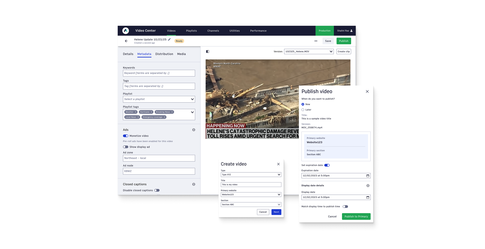
The page in Video Center where customers can upload videos, add metadata, and publish (what we call the "Video Edit page") is a relatively old piece of software.
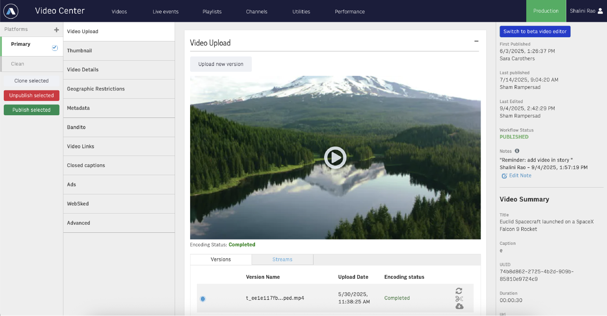
Arc has made significant changes to the Video Edit page over time to add new functionality, but the fundamental user interface has not changed. And that user interface is inconsistent with our other Arc apps because Arc didn't even exist as an idea yet when it was first built.
The Video Edit page is where our customers spend most of their time within Video Center. The average visitor session is nearly 20 minutes.
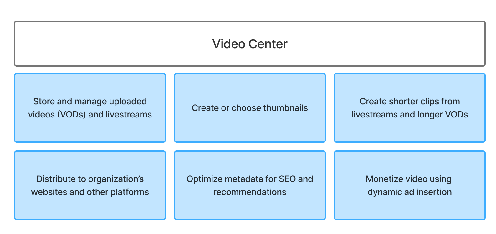
We aimed to kill a few birds with one stone in this redesign:
We ran a survey across several of our customer organizations to hear from direct users their pain points with the legacy experience. We received 70+ responses from 10+ customer organizations. There was an overall negative opinion of the ease of use for the product and a strong desire for a full overhaul of the entire experience.
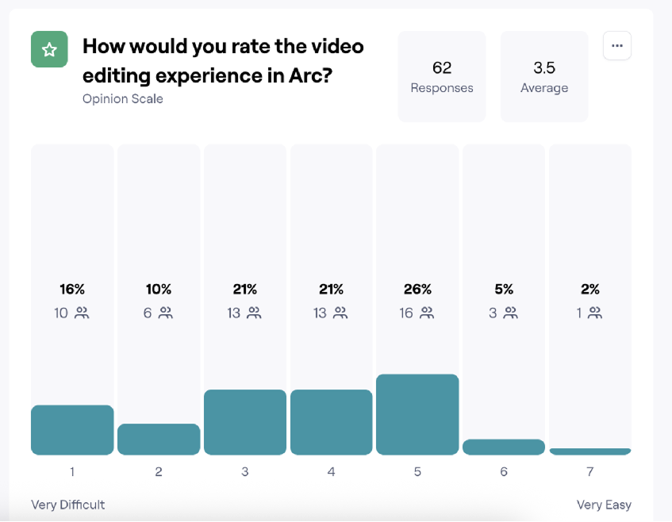
Some main pain points were:
The survey made clear that there were two main personas who frequented the Video Edit page.
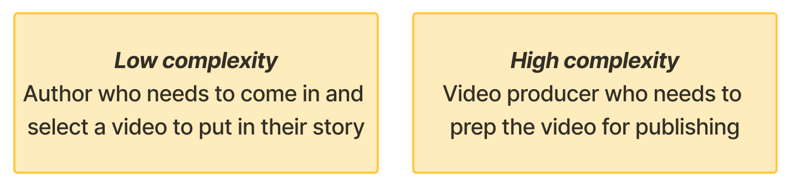
We utilized Datadog to collect click data and session tracking to determine priority workflows and break up the work into MVP/beta release, full feature release, and what was headed for deprecation.
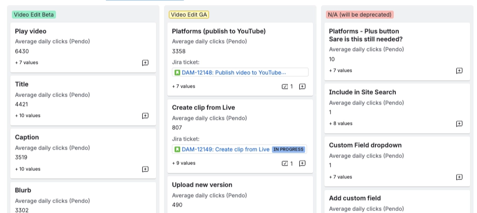
Since the legacy UI was both archaic and convoluted, technical constraints were a large consideration at every turn of the work. Spikes needed to be investigated and backend logistics were heavy influences in deciding how each UI element was to be ported into a newly redesigned editing experience.
Also, since maintaining parity with our editorial application and leveraging as many existing components as possible were two main goals, fields and workflows that could be directly pasted in were also prioritized for MVP.
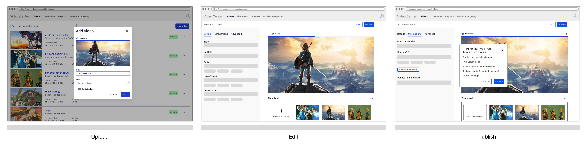
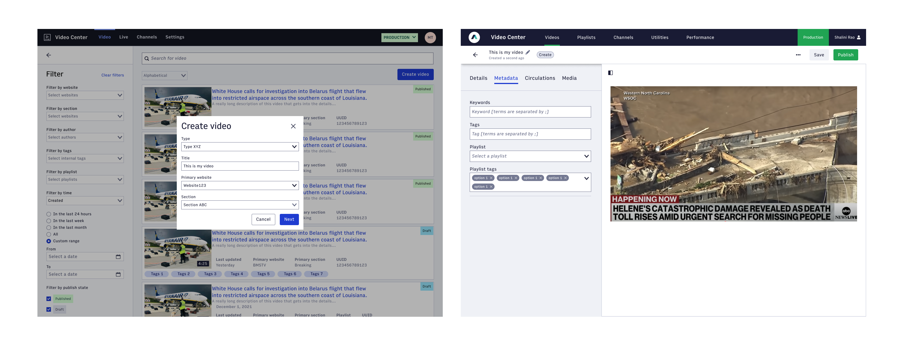
After an initial round of user testing with employees of our MVP from three different customer organizations, we received feedback to inform the full release with 1 to 1 parity with the legacy experience.
This was a long overdue and highly anticipated redesign both within our company's engineering team and our customers' organizations. Strongly positive feedback was received on both ends. I consulted with the lead front-end engineers who would be taking on the work and created development documentation with according acceptance criteria. Each component and field section was rounded out with empty, error, and filled states.
Some positive feedback from our customers upon beta release:
Increase platform's value proposition for accessibility, reader engagement, and cross-platform distribution by offering audio asset management
Expanded asset type offering to include audio
Product Designer
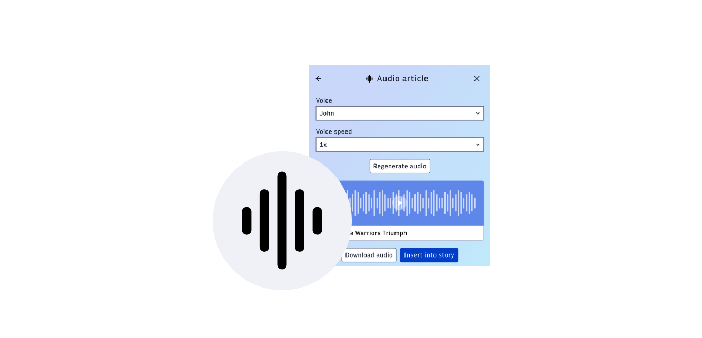
As demand for audio-based content grows, the platform aims to offer a deeply personalized experience where readers who prefer audio can consume content in a new modality.
With full platform support for the audio modality, we seek to attract a range of customers including:
I used Figma Make to create a rudimentary initial mockup of an audio management system following our existing patterns for asset landing pages. This one prototype proved to be instrumental in getting leadership buy-in and informed much of the later design iterations.
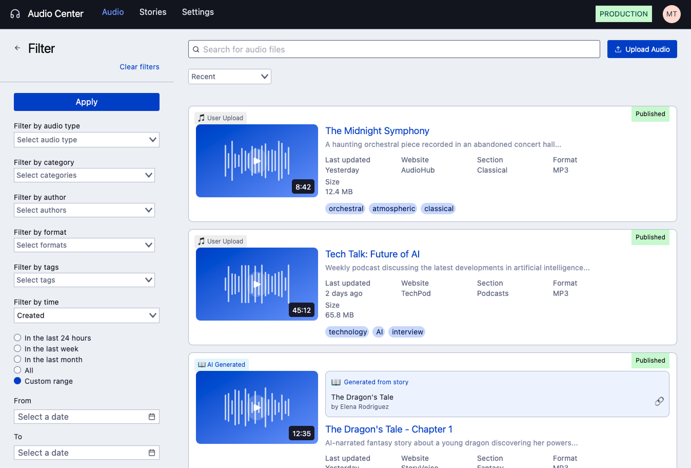
Since this was an entirely new product offering, the critical path was defined to include all basic asset management functionality.
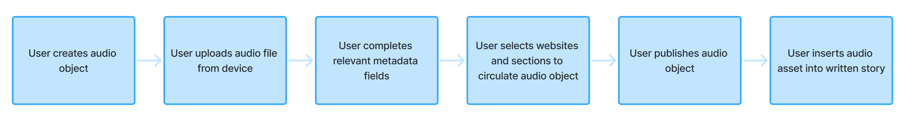
In the effort to further the efforts to provide a unified asset selection experience (with the potential future of fully consolidating all asset management products into one), we leveraged the tried and tested two-pane asset edit format that had been implemented for written stories and video assets.
There had also been previous POC work done by engineering to create a new audio player with integrated thumbnails to be used across all products. This work informed how each audio object would behave in different experiences.
From here, I designed the landing page where users could search for audio objects, which would then be used in a modal form to allow users in the editorial experience to add an audio asset to their written content.
I created the edit page to parallel the asset edit experiences in other products, with a smaller number of fields and simplified view for the first release of audio modality support.
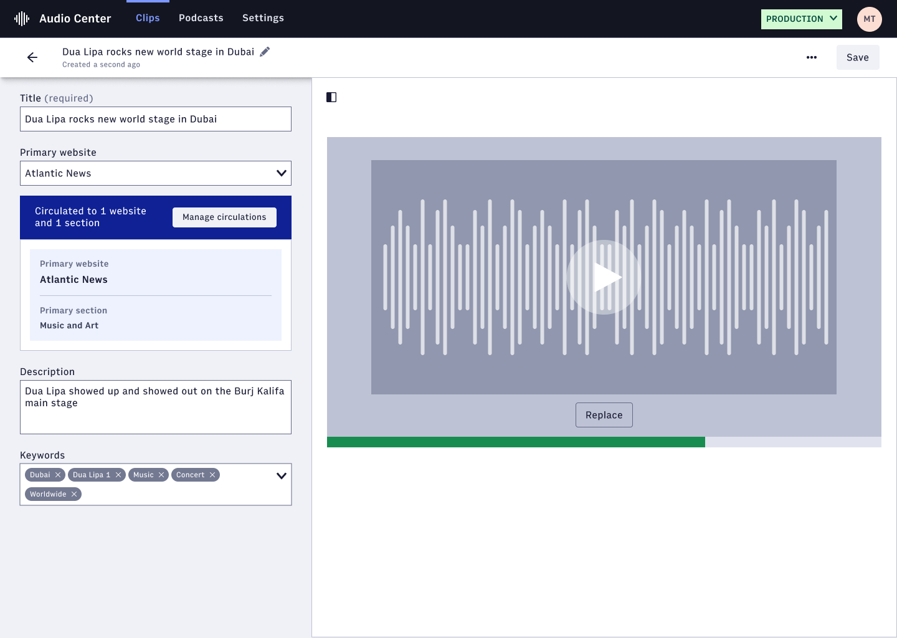
The main goal for providing audio as an asset option was to enable newsrooms to leverage the audio modality to boost reader retention. Text-to-Speech (TTS) and consuming written content in an audio format is a burgeoning medium many platforms are using to combat reader churn.
There was already previous work done to integrate an AI Assistant into the editorial tool Composer that provided suggestions for metadata fields. This provided a landscape to add TTS functionality that could aid in the writing process.
There were a few design iterations to leverage the existing card design for audio objects. It demonstrated a need for a larger card design to be used in editorial applications and to leverage the functional thumbnail player.
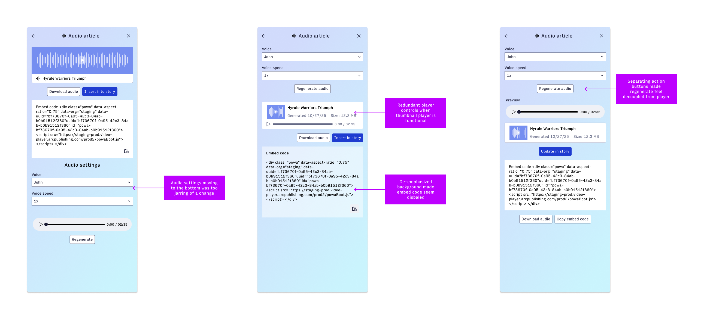
From here, we evaluated how the audio element would fit inline in the editorial experience. Since there is still work to be done to investigate how child objects would be treated in a larger sense, the first iteration utilized the full size audio card.
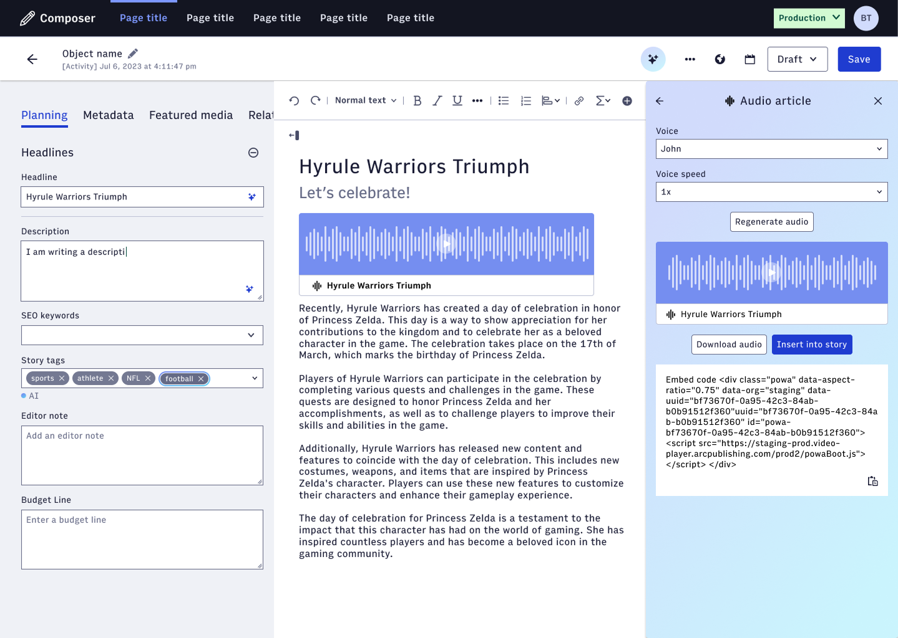
Each integration and presentation of an audio object required different information to be surfaced. The form factor of each card was defined by where the object would be integrated.
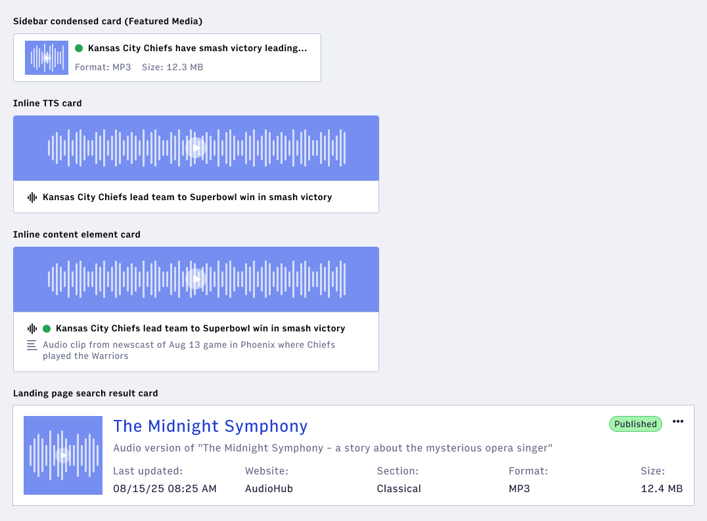
I prepared the work for our developers by crafting documentation with each relevant state and UI elements with the acceptance criteria to outline the expected behavior.
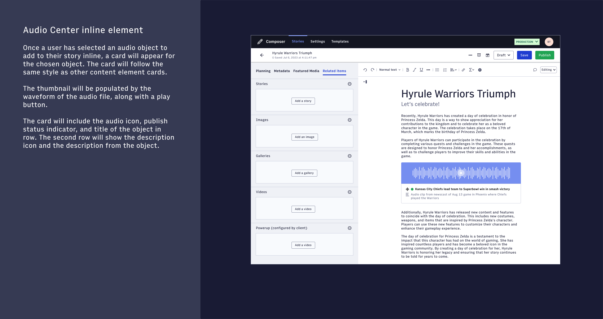
There was an outlined future phase of work that would eventually allow us to support podcasts, as so many media organizations are creating to keep up with changing content consumption habits. I utilized Figma Make to think ahead on how a podcast management system would fit into the existing audio tool.
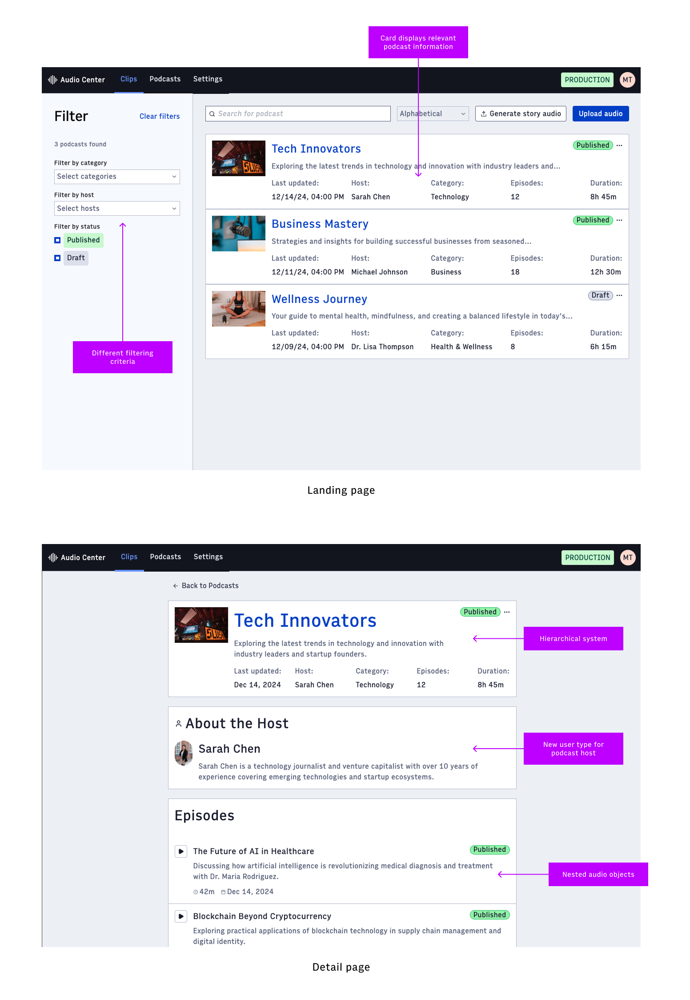
Create a card component that can accommodate all use cases across 10+ products to unify the landing page views cross-platform
A fully composable card component with swappable content areas and flexible layout
Lead Designer
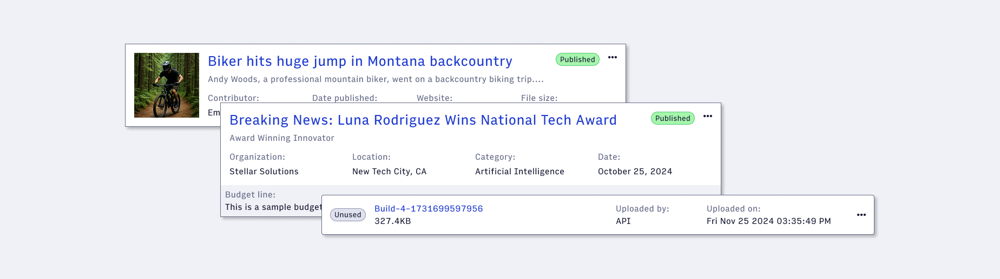
Arc XP has had several designers over a decade all working on each product independently with little collaboration. As each product evolved, so did their design needs. With no design system at the beginning, this resulted in each product having different card displays with different components.
In our third iteration of our design library, I endeavored to create one card component that would span all our products' use cases while maintaining a cohesive look and feel. With nearly a dozen products all utilizing a card component of some form in their landing pages, there was a task at hand to devise a comprehensive layout that would accommodate a wide range of information and size constraints.
To begin, I audited all existing cards used across our 10+ products.
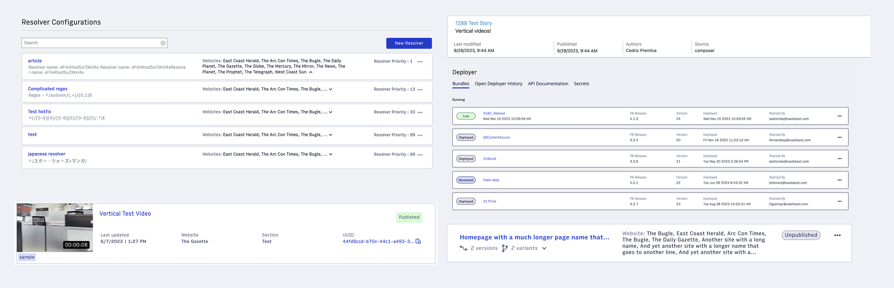
There was a concrete list of data points and types to be displayed on a card, which required some amount of prescription to create a unified layout and designated placement for specific content elements.
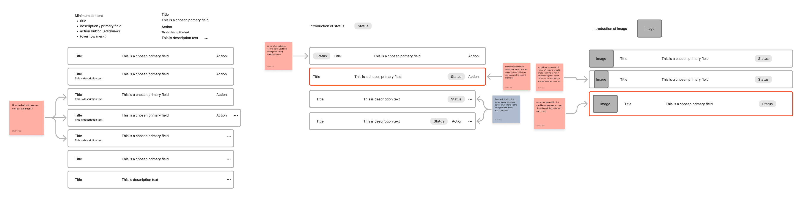
From here, it became clear that there were two main form factors of cards: a single row card and 2+ row card.
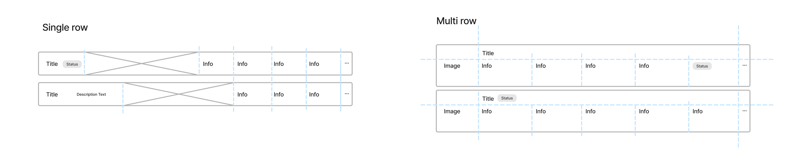
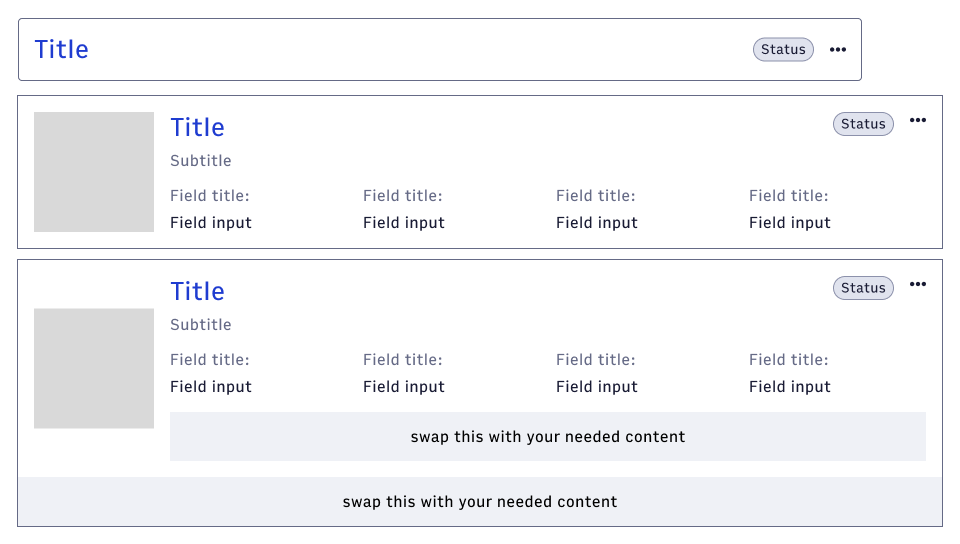
To stress test the cards, I asked my fellow designers to use the component to match their existing use cases in their respective products.
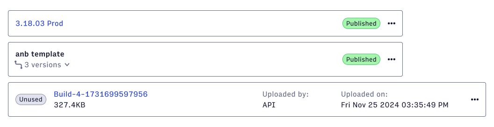
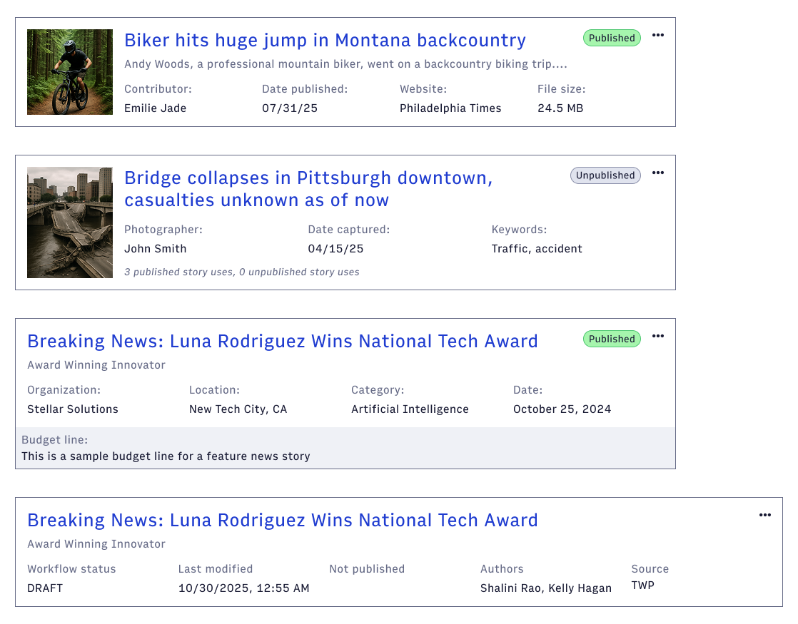
Create teacher-facing interface of music theory education gamification app (Noteful) to expand into classroom applications
Rebranded color and type system for Noteful and fully designed teacher dashboard
Product Manager and Co-designer
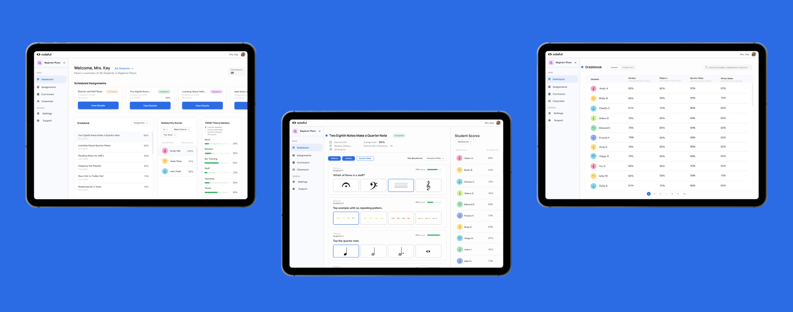
I worked with a local startup called Noteful that is building a mobile app aiming to make learning music theory engaging and fun for younger students.
I acted as product manager and client liaison, which required me to maintain our project vision, establish deadlines and interim deliverables, maintain our client relationship, and oversee our design, research, and implementation progress. In addition, I contributed to our interface designs, research process and biweekly presentations. I was also the main decision maker and advocate for both our client's needs as well as our users' needs. Since the startup was so new, there was a lot of room to strategize with the founder about the vision for the company and how our product would align with their goals.
The founder, Becky, has been teaching music to students of all ages for over 25 years and found that both her teacher peers and her students were frustrated with the traditional pen and paper methods of teaching and practicing music theory. She decided to develop a music theory game app (taking inspiration from Duolingo) to make practicing key theory concepts and exercises more enjoyable for students of all ages.
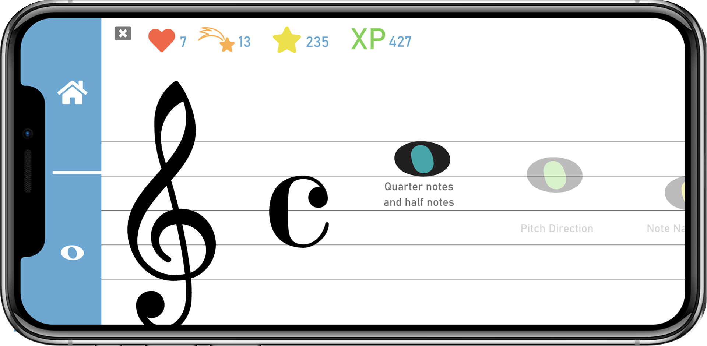
FRESH Theory is an acronym for Form, Rhythm, Ear training, Staff, Harmony, and musical Terms. This will come up many times throughout the process of designing this interface, and will act as the guiding force for the information architecture and color branding later on.
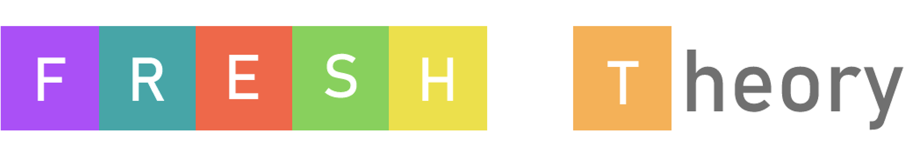
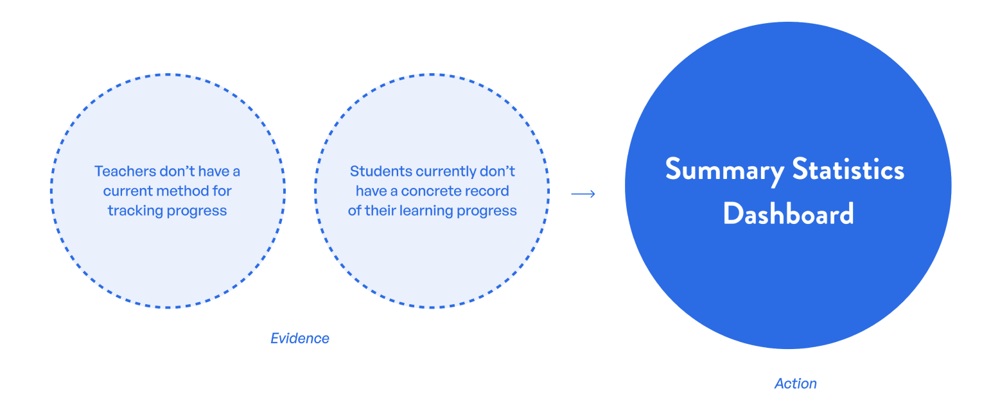
The overall dashboard page offers teachers access to easily digestible information about student performance and assignments. Teachers have the option to toggle between different classrooms and student views.
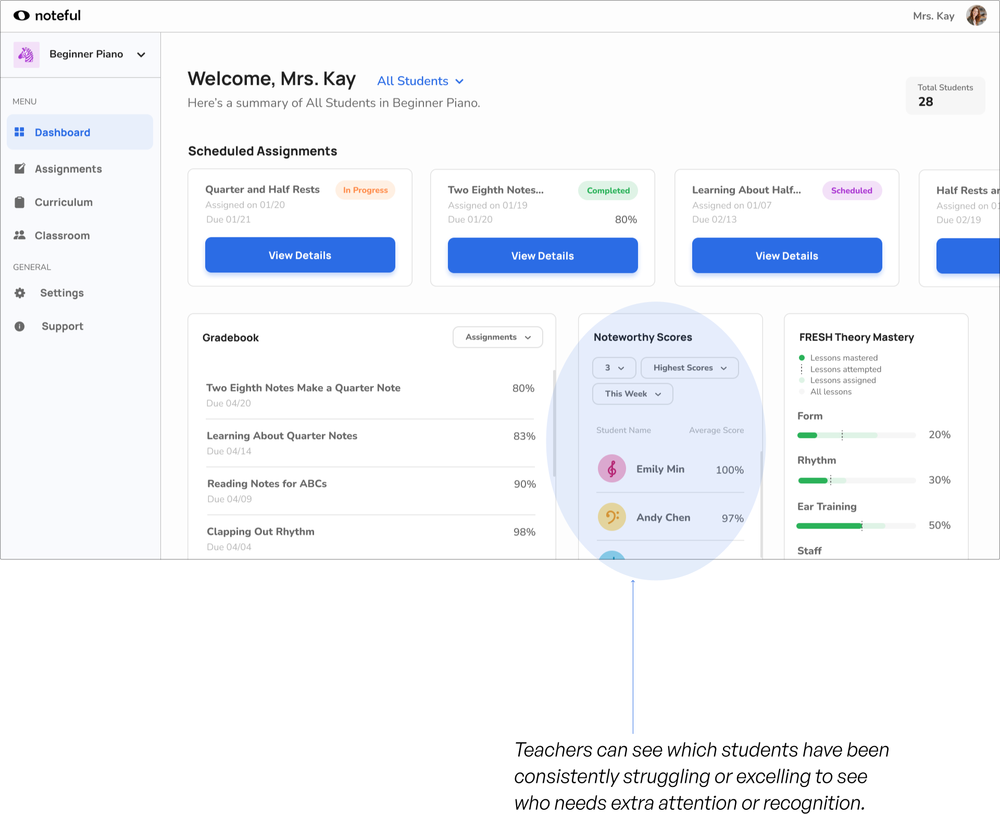
Fresh Theory Mastery Widget
The FRESH Theory Mastery widget is an essential component of what makes the Noteful teacher interface different from other classroom management systems. The specificity of the data analytics as it applies to the core foundation of the Noteful game and curriculum cannot be replicated on a different platform.
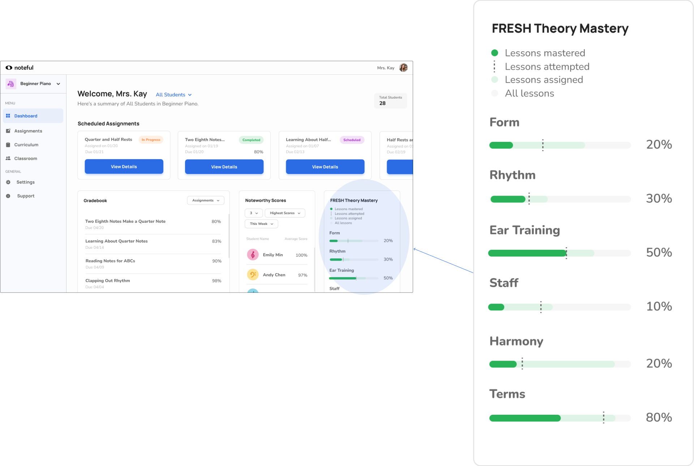
On the individual assignment page, teachers can view all questions and lessons within an assignment they created as well as how each of their students scored. They have more freedom to sort and manage the information to fit their needs using the different sorting tools and filters.
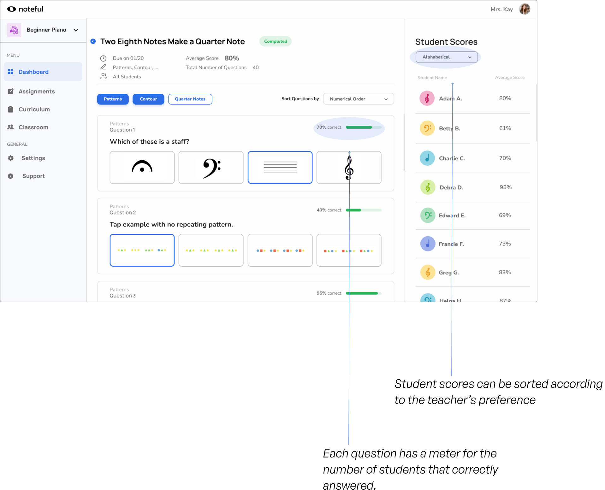
The gradebook page shows grades for each student by lesson. It offers a complete history of a student's performance since joining the class. Teachers can search by a variety of keywords including student name, assignment name, lesson name, keywords in assignment or lesson name.
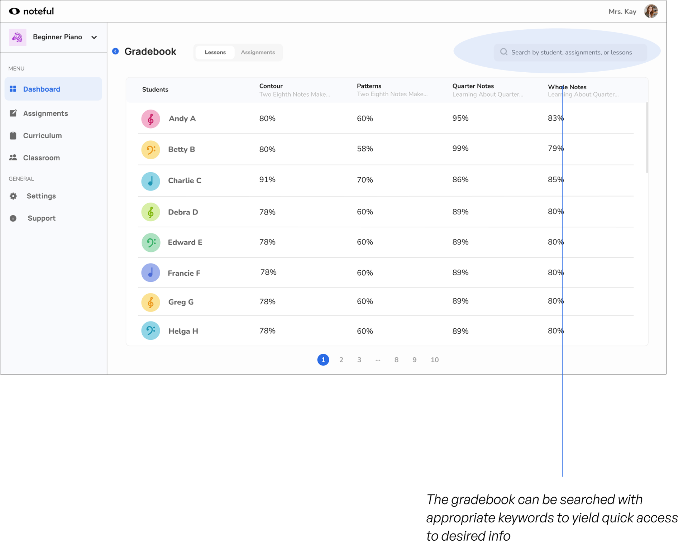
Teachers can now leverage the autograded assignment data to make decisions on how they structure their lessons, whether they're 1:1 or in a classroom setting. They can see trends in student performance as well as callouts for specific topics and questions the students are struggling with.
Since the mobile app was still very much in development, there was no type system in place and only a single color swatch for a primary color. Since the dashboard is meant to be viewed in either laptop or tablet screen size, the typeface needed to minimize eye strain, especially for older users. We also modified the original primary color chosen by the Noteful team.
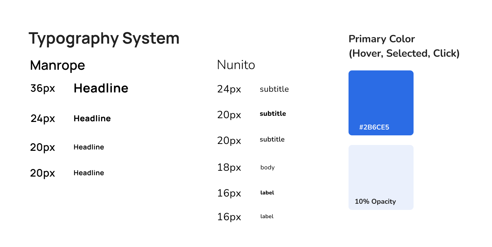
FRESH Theory is the foundation of all the content within the Noteful mobile app and the color system heavily impacts the information architecture.
The FRESH Theory colors are used to categorize questions and lessons, and help students keep track of what concepts they're working on. However, the original system created by the Noteful team had accessibility issues, as well as heavy overlap with necessary system colors such as success and error flags. We aimed to keep the playful personality of the app, but with more consideration for accessibility, higher contrast between the colors, and the creation of room for other system colors.
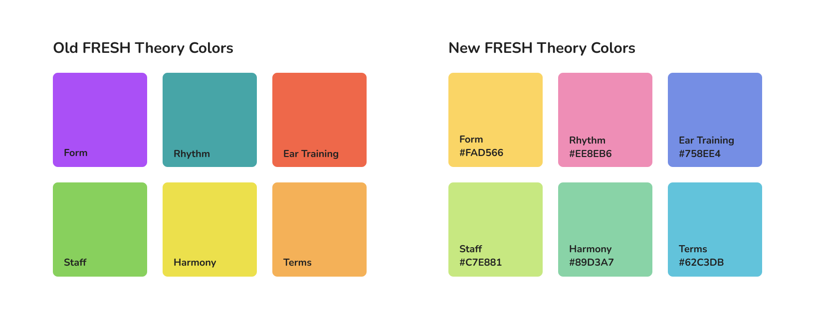
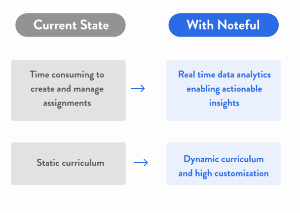
Throughout the duration of the project, we conducted 6 rounds of interviews and user testing with over 25 classroom and private music teachers. The insights gained from each round directly informed the design decisions made in our low, mid, and high fidelity screens.
We dove into current routines and workflows relating to teaching music theory during lessons, assigning homework, progress tracking, curriculum formation, student roadmaps, and student motivation. We also interviewed students to evaluate how theory plays into their motivation to learn music and the current pain points they had with reaching personal goals, teacher-student relationships, and control over their own learning.
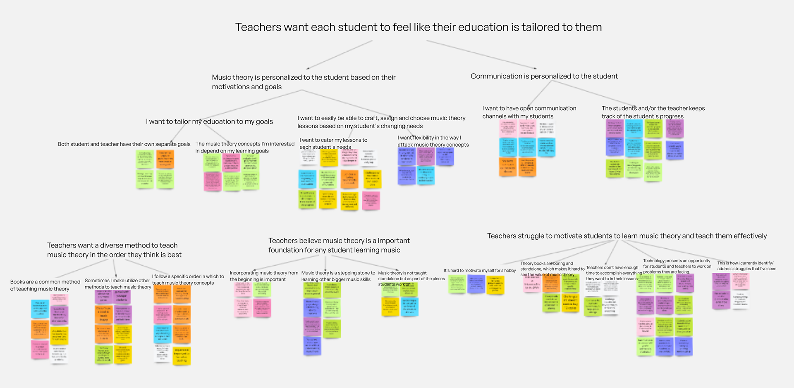
We came up with a list of possible metrics teachers do or do not have access to, as well as data our client told us the app would collect. We let teachers rank the order in which they would prioritize each metric to give us a better idea of what information they're missing in their current teaching styles.
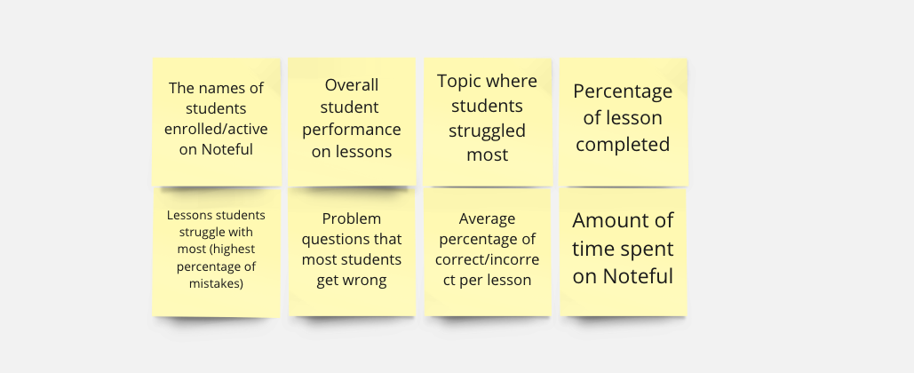
We looked into existing classroom management systems (Canvas, Khan Academy) and other music theory learning platforms (musictheory.net, Tenuto) to evaluate why teachers weren't using any tools already to solve their pain points. The first problem we found was the lack of flexibility and control the teacher had over how they wanted to manage their class and assignments. The second problem was that classroom management systems only exist for the transfer of assignments between teachers and students; there is no pre-generated content available for the teacher to utilize.
Using a Crazy 8 session, we created 13 distinct storyboards of use cases for a music theory teacher interface. The use cases ranged from a messaging system that allowed students to ask quick questions outside of class to fully customizable roadmaps the teacher and student would collaboratively create.
We then conducted speed dating interviews, where we gave each teacher only a few minutes to get acquainted with each storyboard and give their overall impressions. This helped us refine our wide scope of ideas into the main 4 that teachers found most helpful and stated they would most likely adopt.
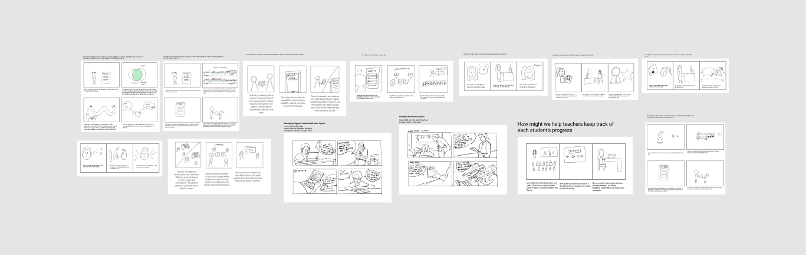
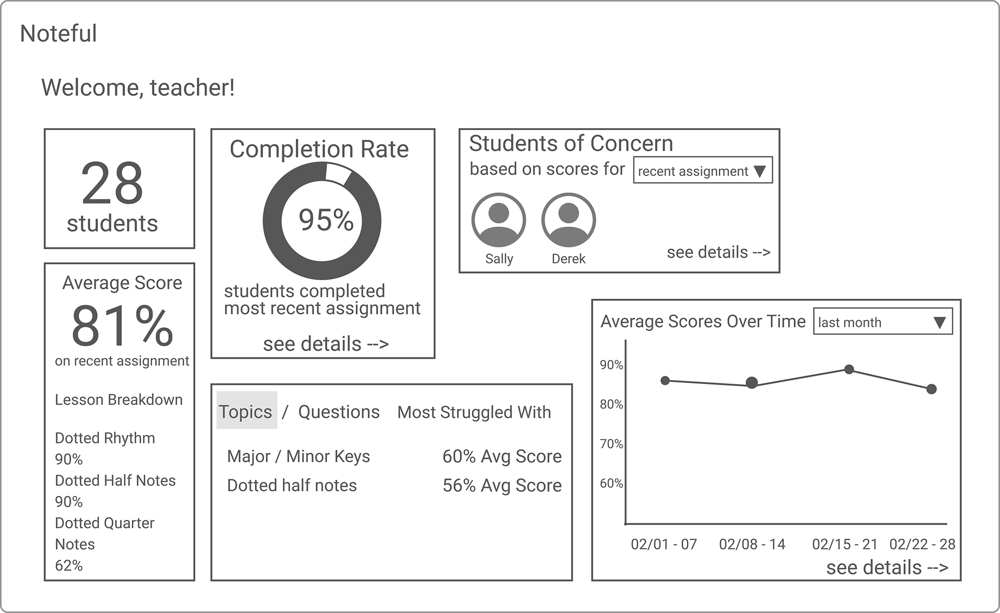
1. Private teachers need individual student views more than a group summary dashboard
There is a drastically different use of the dashboard between private teachers who teach 1:1 and classroom teachers who are teaching 20–30 students at once. The dashboard would need to show summary statistics on a student by student basis, allowing the teacher to toggle between their students to see their progress.
2. Teachers need familiar representations of important data otherwise the purpose of the visualizations is lost
A big piece of feedback we got was that some of the visualizations weren't intuitive and were almost jarringly unfamiliar. While we want to simplify data and highlight irregularities, we should also keep the dashboard similar to what teachers are used to interacting with elsewhere.
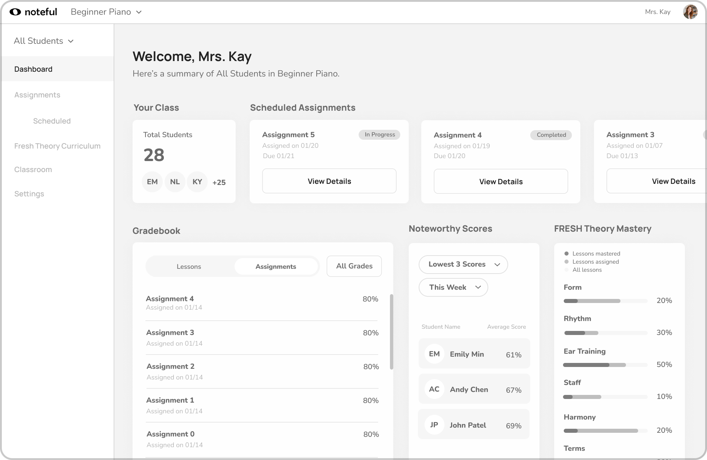
1. Provide holistic assignment information in one place
As we saw when we tested our assignment page, teachers believed they would see all relevant assignment information on that page, including the questions most struggled with and the noteworthy scores. This showed us they value having all the information in one place even if it makes the page more crowded.
2. Fix the gulf of execution for navigation between pages and views
Specifically, teachers expected the navigation bar dropdown to show a roster of students rather than being used to toggle the views from classroom to individual students. They also thought that clicking an individual student's name would change the dashboard to that student's individual view. We need to be more mindful of the multiple different ways a teacher can accomplish the same task.
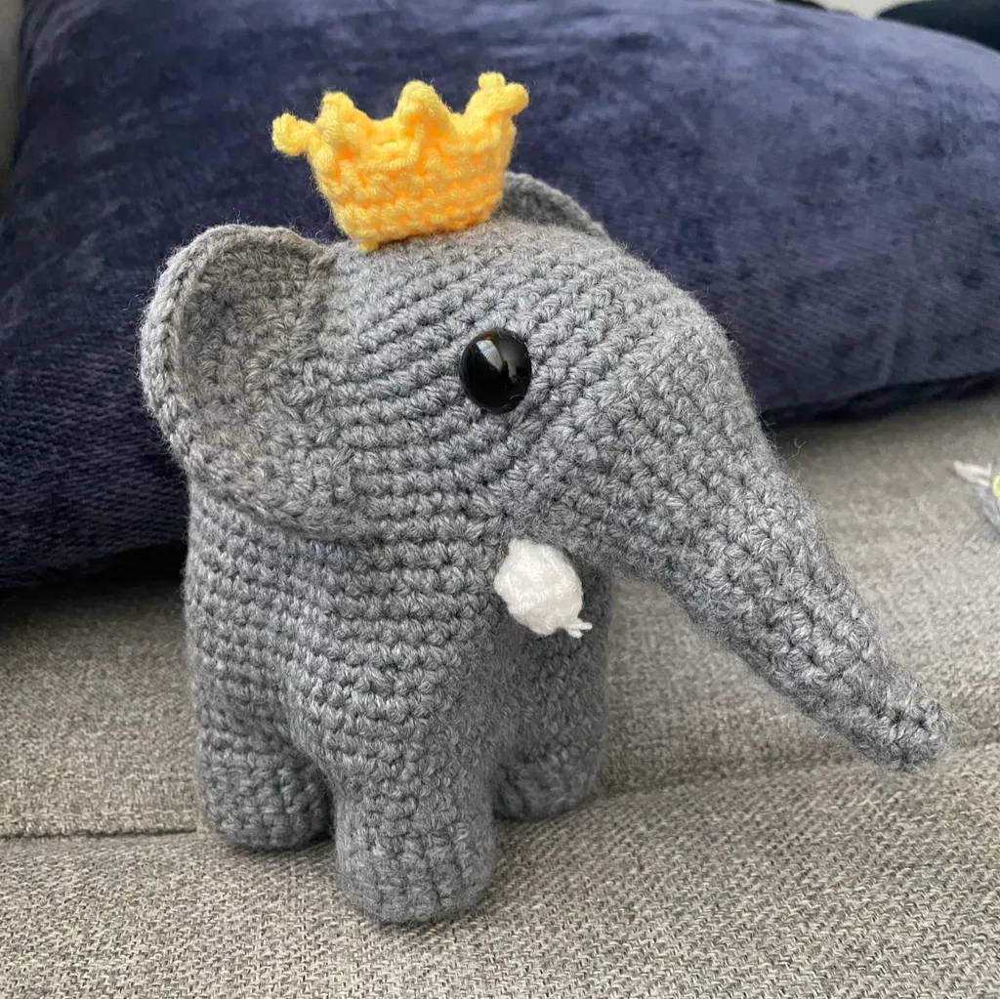
Crocheted an elephant for a friend
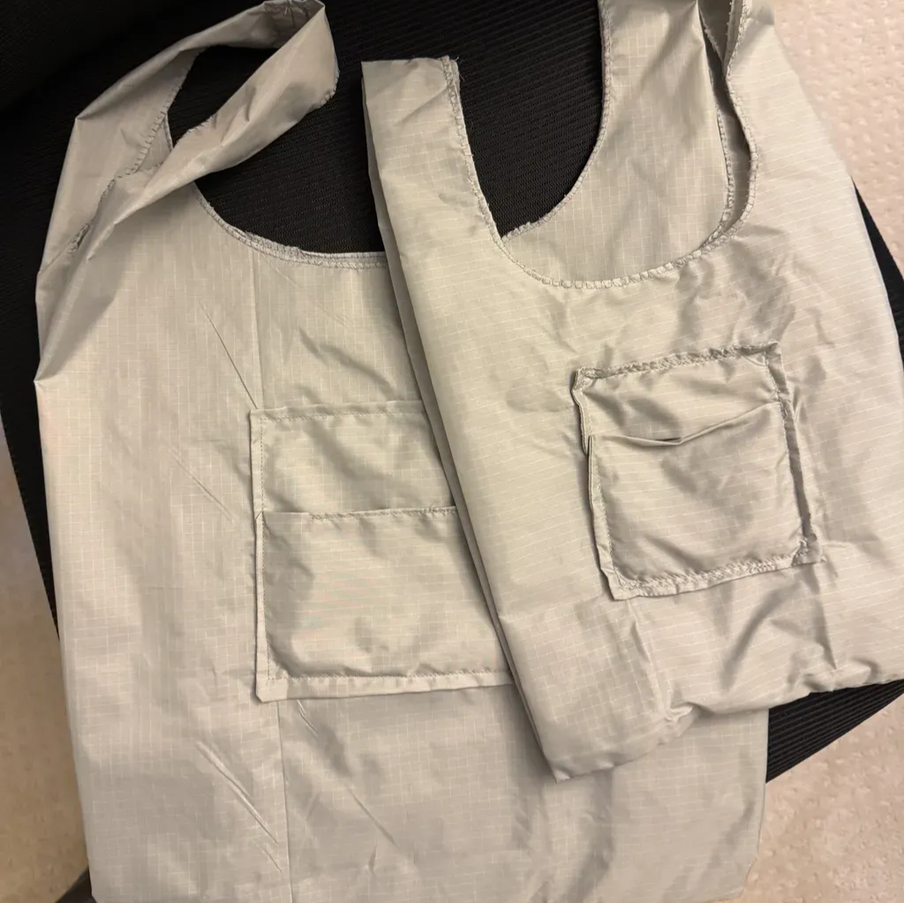
Sewed some foldable nylon bags (Baggu Dupe)
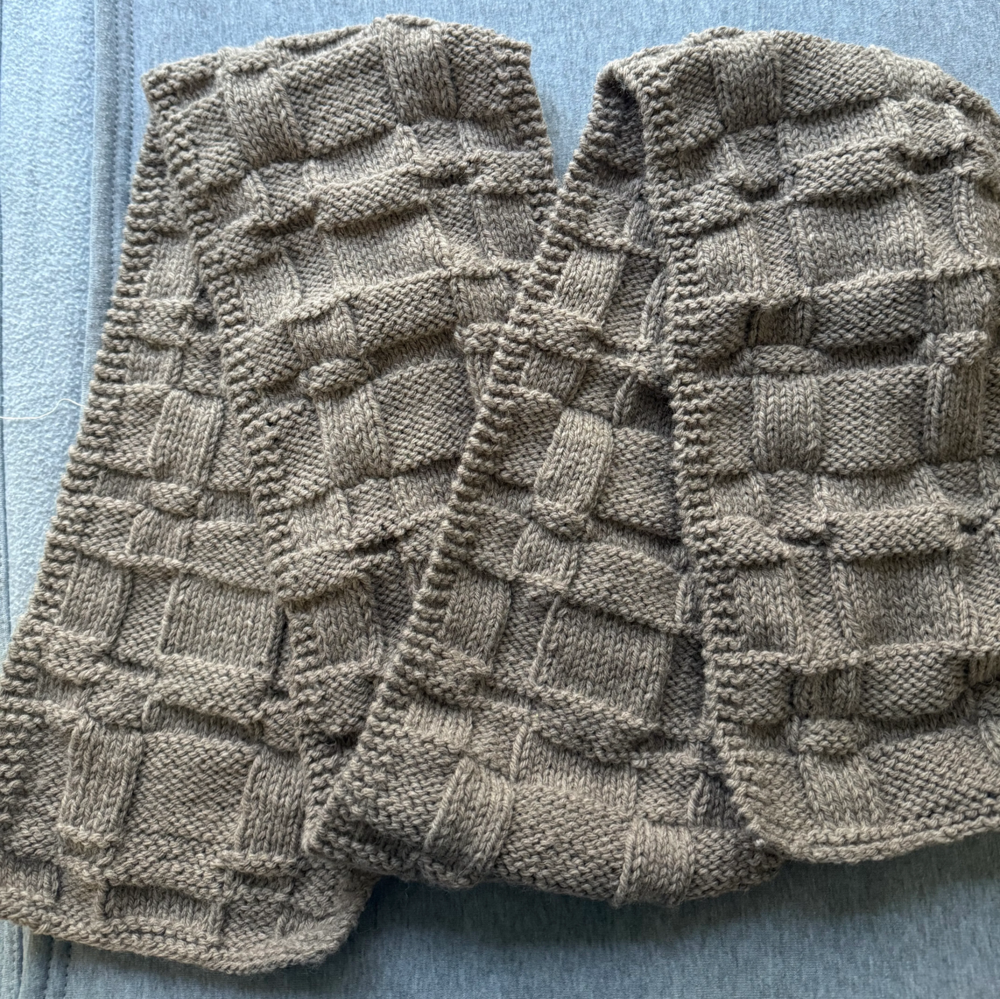
Knitted a scarf for the first time ever
Learned how to arrange flower bouquets
Learning how to do digital art using Procreate
Learning how to do mehendi (aka henna)
Started to garden - grew my own tomatoes and peppers
Grew my own basil to make homemade pesto
Learning how to mend torn clothing (reduce waste!)
Learned how to ski after college
Started thrifting vintage Christmas village
Embroidered Sokka's boomerang (from Avatar)